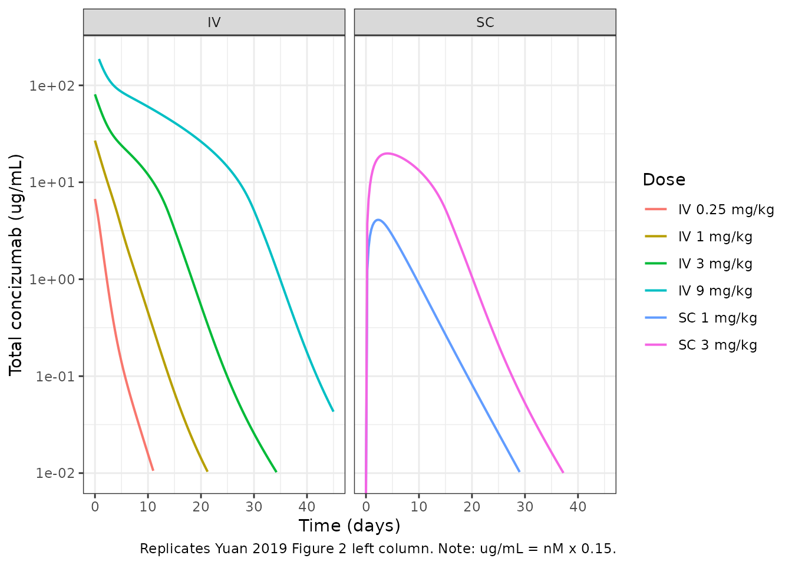
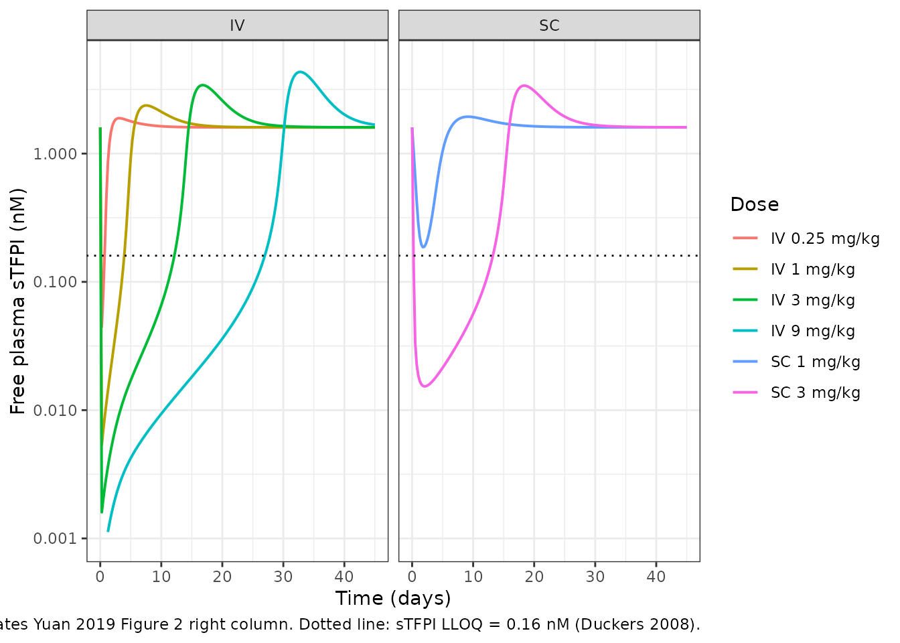
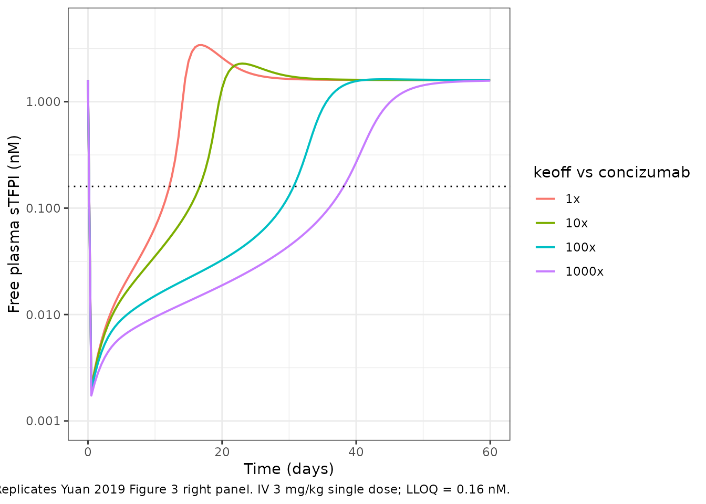

Model and source
- Citation: Yuan D, Rode F, Cao Y. A systems pharmacokinetic/pharmacodynamic model for concizumab to explore the potential of anti-TFPI recycling antibodies. Eur J Pharm Sci. 2019 Oct 1;138:105032.
- DOI: https://doi.org/10.1016/j.ejps.2019.105032
- PMID: 31374317
- Underlying clinical PK/PD data digitised from Chowdary P et al. J Thromb Haemost. 2015;13(5):743-754 (PMID 25641556).
- Upstream model for endosome / FcRn parameters: Yuan D, Krzyzanski W, Cao Y. J Pharmacokinet Pharmacodyn. 2018;45(6):851-864.
Concizumab is a humanized monoclonal antibody (IgG4) directed against tissue factor pathway inhibitor (TFPI) for treatment of hemophilia. It binds both the soluble form (sTFPI) and the endothelial cell-membrane-bound form (mTFPI) at the conserved K2 domain with equal affinity. mTFPI binding drives non-linear receptor-mediated endocytosis and lysosomal degradation (target-mediated drug disposition, TMDD); sTFPI binding produces an antibody-target complex that is recycled by FcRn similarly to free antibody and therefore contributes to linear clearance.
The systems PK/PD model in Yuan 2019 extends the prior general model for anti-soluble-target antibodies (Yuan 2018) by adding a second endosome compartment that captures mTFPI-driven non-linear clearance. The full system has 23 ODEs across plasma, two nested endothelial endosomes (Ve1 for mTFPI-mediated endocytosis, Ve2 for nonspecific pinocytosis), two peripheral tissue compartments (tight and leaky), and a lymph compartment.
Population
The clinical PK/PD data used to optimise the human mTFPI baseline,
mTFPI turnover (kdegm = kint), and target-dissociation rate
constant (koff) come from the Chowdary 2015 first-in-human
single ascending dose study: 24 healthy adult male volunteers receiving
IV concizumab at 0.25, 1, 3, or 9 mg/kg and SC concizumab at 1 or 3
mg/kg (24 IV subjects pooled, 8 SC subjects pooled; doses given as
single administrations). Total concizumab and free sTFPI were quantified
in plasma over 6 weeks. Yuan 2019 used the IV cohorts for parameter
optimisation and held the SC cohorts out as an external validation
set.
The reference subject is a 70 kg adult; physiological parameters (plasma volume Vp = 2.6 L, total interstitial fluid Visf = 15.6 L, lymph flow L = 2.904 L/day, vascular reflection coefficients sigma1 = 0.945 and sigma2 = 0.697, lymphatic reflection coefficient sigmal = 0.2, IgG4 distribution fraction Kp = 0.4) come from the Cao 2013 mPBPK model. sTFPI baseline (sTFPI_b = 1.6 nM) was measured by Hansen et al. 2014; total sTFPI degradation rate (kdegs = 1.18 /day) was measured in a clinical pulse-chase study by Farrokhi et al. 2018.
Source trace
The per-parameter origin is recorded as an in-file comment next to
each ini() entry in
inst/modeldb/specificDrugs/Yuan_2019_concizumab.R. The
table below collects them in one place for review.
| Parameter or equation | Value (human) | Units | Source |
|---|---|---|---|
vp |
2.6 | L | Yuan 2019 Table 2 (Cao 2013) |
visf |
15.6 | L | Yuan 2019 Table 2 (Cao 2013) |
vlymph |
5.2 | L | Yuan 2019 Table 2 (Cao 2013) |
ltot |
2.904 | L/day | Yuan 2019 Table 2 (Cao 2013) |
sigma1 |
0.945 | - | Yuan 2019 Table 2 (Cao 2013) |
sigma2 |
0.697 | - | Yuan 2019 Table 2 (Cao 2013) |
sigmal |
0.2 | - | Yuan 2019 Table 2 (Cao 2013) |
kp (IgG4) |
0.4 | - | Yuan 2019 Table 2 (Cao 2013) |
kon_per_nm_day |
387.072 | 1/(nM*day) | Yuan 2019 Table 2 (Hilden 2012 in vitro): 4.48e6 1/(M*s) |
koff_per_day |
150.336 | 1/day | Yuan 2019 Table 1 (optimised in reduced model): 1.74e-3 1/s |
keon_per_nm_day |
387.072 | 1/(nM*day) | Yuan 2019 Section 2.4: assumed equal to plasma kon for concizumab |
keoff_per_day |
150.336 | 1/day | Yuan 2019 Section 2.4: assumed equal to plasma koff for concizumab |
stfpi_b |
1.6 | nM | Yuan 2019 Table 2 (Hansen 2014) |
kdegs |
1.18 | 1/day | Yuan 2019 Table 2 (Farrokhi 2018) |
mtfpi_b |
20.03 | nM | Yuan 2019 Table 1 (optimised in reduced model) |
kdegm = kint |
1.155 | 1/day | Yuan 2019 Table 1 (optimised in reduced model) |
clup |
1.48 | L/day | Yuan 2019 Table 2 (Yuan 2018, adalimumab calibration) |
cle |
5.75 | L/day | Yuan 2019 Table 2 (Yuan 2018) |
krec |
124.7 | 1/day | Yuan 2019 Table 2 (Hopkins and Trowbridge 1983 endosome transit time) |
ve1, ve2
|
0.0035 | L | Yuan 2019 Table 2 (Li 2014): 0.005% body weight |
fcrn_b |
49800 | nM | Yuan 2019 Table 2 (Shah and Betts 2012) |
k1on_per_nm_day |
20.8224 | 1/(nM*day) | Yuan 2019 Table 2 (adalimumab-human FcRn, Suzuki 2010): 2.41e5 1/(M*s) |
k1off_per_day |
13996.8 | 1/day | Yuan 2019 Table 2 (Suzuki 2010): 0.162 1/s |
fsc |
0.93 | - | Yuan 2019 Table 2 (Agerso 2014 monkey value, assumed for human) |
ka |
0.231 | 1/day | Yuan 2019 Table 2 (Agerso 2014 monkey value, assumed for human) |
| Eq. 1 (depot) | n/a (structural) | – | Yuan 2019 Appendix II, Eq. 1 |
| Eq. 2 (free Ab plasma) | n/a (structural) | – | Yuan 2019 Appendix II, Eq. 2 |
| Eq. 3 (free sTFPI plasma) | n/a (structural) | – | Yuan 2019 Appendix II, Eq. 3 |
| Eq. 4 (Ab-sTFPI plasma) | n/a (structural) | – | Yuan 2019 Appendix II, Eq. 4 |
| Eq. 5 (free mTFPI plasma) | n/a (structural) | – | Yuan 2019 Appendix II, Eq. 5 |
| Eq. 6 (Ab-mTFPI plasma) | n/a (structural) | – | Yuan 2019 Appendix II, Eq. 6 |
| Eqs. 7-11 (endosome 1) | n/a (structural) | – | Yuan 2019 Appendix II, Eqs. 7-11 |
| Eqs. 12-17 (endosome 2) | n/a (structural) | – | Yuan 2019 Appendix II, Eqs. 12-17 |
| Eqs. 18-23 (tissues + lymph) | n/a (structural) | – | Yuan 2019 Appendix II, Eqs. 18-23 |
Unit conventions
- Time: days throughout. Rate constants from the paper in s^-1 (kon, koff, k1on, k1off) are converted by multiplying by 86400 s/day; second-order constants given as 1/(Ms) are additionally divided by 10^9 nM/M to give 1/(nMday).
- State variables: all amounts in nmol.
- Concentrations: all in nM (molar). Total antibody MW = 150 kDa, so 1 mg of antibody = 1000 / 150 nmol = 6.667 nmol.
- Volumes: L.
- Dose: nmol. To dose a 70 kg adult at 1 mg/kg, give amt = 70 * 6.667 = 466.67 nmol.
Load the model
mod <- readModelDb("Yuan_2019_concizumab")
mod_typ <- rxode2::zeroRe(mod)
#> Warning: No omega parameters in the model
#> Warning: No sigma parameters in the model
mw_kda <- 150
nmol_per_mg <- 1000 / mw_kdaSteady-state check (no antibody dose)
Before any antibody is administered, the endogenous baselines for
sTFPI (plasma and Ve2 endosome), mTFPI (plasma and Ve1 endosome), and
FcRn (both endosomes) must hold to machine precision. This verifies the
initial conditions in model() match the analytic steady
states in Yuan 2019 Appendix II.
ev_ss <- et(seq(0, 60, by = 1))
ss <- rxode2::rxSolve(mod_typ, events = ev_ss) |> as.data.frame()
# sTFPI plasma concentration should be 1.6 nM
cat("Free sTFPI in plasma over 60 days:\n")
#> Free sTFPI in plasma over 60 days:
cat(" range:", round(range(ss$sTFPI), 4), "nM (baseline = 1.6)\n")
#> range: 1.6 1.6 nM (baseline = 1.6)
cat(" max drift:", signif(diff(range(ss$sTFPI)), 3), "nM\n")
#> max drift: 4.44e-16 nM
stopifnot(diff(range(ss$sTFPI)) < 1e-6)
# Total antibody must stay at zero
cat("\nTotal antibody over 60 days:\n")
#>
#> Total antibody over 60 days:
cat(" max value:", signif(max(abs(ss$Cc)), 3), "nM (should be 0)\n")
#> max value: 0 nM (should be 0)
stopifnot(max(abs(ss$Cc)) < 1e-9)
# Endogenous endosome populations also at steady state
cat("\nEndogenous endosome state-amount drifts over 60 days:\n")
#>
#> Endogenous endosome state-amount drifts over 60 days:
for (v in c("mtfpi_e1", "stfpi_e2", "fcrn_e1", "fcrn_e2")) {
d <- diff(range(ss[[v]]))
cat(" ", v, ": drift =", signif(d, 3), "\n")
}
#> mtfpi_e1 : drift = 5.81e-12
#> stfpi_e2 : drift = 1.82e-13
#> fcrn_e1 : drift = 0
#> fcrn_e2 : drift = 0Mass-balance check at steady state (no antibody)
At t = 0 with no antibody and the analytic baselines from Yuan 2019 Appendix II ICs, every flux into and out of each endogenous compartment must cancel.
# sTFPI plasma flux balance:
# production = ksyns = kdegs * sTFPI_b * Vp
# loss = kdegs_prime * stfpi_p + clup * stfpi_p / vp
# kdegs_prime = kdegs - clup / vp
# At baseline stfpi_p = sTFPI_b * Vp:
vp <- 2.6
ve2 <- 0.0035
clup <- 1.48
cle <- 5.75
kdegs <- 1.18
stfpib <- 1.6
stfpi_p_bl <- stfpib * vp # nmol
ksyns_amt <- kdegs * stfpib * vp # nmol/day
kdegs_prime <- kdegs - clup / vp # 1/day
loss_nonpino <- kdegs_prime * stfpi_p_bl # nmol/day
loss_pino <- clup * stfpib # nmol/day (= clup * stfpi_p / vp)
cat("sTFPI plasma mass balance at baseline:\n")
#> sTFPI plasma mass balance at baseline:
cat(" production (ksyns_amt): ", signif(ksyns_amt, 5), "nmol/day\n")
#> production (ksyns_amt): 4.9088 nmol/day
cat(" loss (non-pinocytosis): ", signif(loss_nonpino, 5), "nmol/day\n")
#> loss (non-pinocytosis): 2.5408 nmol/day
cat(" loss (pinocytosis to Ve2): ", signif(loss_pino, 5), "nmol/day\n")
#> loss (pinocytosis to Ve2): 2.368 nmol/day
cat(" net = ksyns - losses: ",
signif(ksyns_amt - loss_nonpino - loss_pino, 3),
"(should be ~ 0)\n")
#> net = ksyns - losses: 4.44e-16 (should be ~ 0)
stopifnot(abs(ksyns_amt - loss_nonpino - loss_pino) < 1e-9)
# sTFPI Ve2 flux balance:
# inflow = clup * stfpi_p / vp = clup * sTFPI_b
# outflow = cle * stfpi_e2 / ve2
# baseline stfpi_e2 = sTFPI_b * clup * ve2 / cle
stfpi_e2_bl <- stfpib * clup * ve2 / cle # nmol
inflow_e2 <- clup * stfpib # nmol/day
outflow_e2 <- cle * stfpi_e2_bl / ve2 # nmol/day
cat("\nsTFPI Ve2 mass balance at baseline:\n")
#>
#> sTFPI Ve2 mass balance at baseline:
cat(" inflow (Clup * sTFPI_b): ", signif(inflow_e2, 5), "nmol/day\n")
#> inflow (Clup * sTFPI_b): 2.368 nmol/day
cat(" outflow (CLe * stfpi_e2 / Ve2): ", signif(outflow_e2, 5), "nmol/day\n")
#> outflow (CLe * stfpi_e2 / Ve2): 2.368 nmol/day
cat(" net: ",
signif(inflow_e2 - outflow_e2, 3), "(should be ~ 0)\n")
#> net: 0 (should be ~ 0)
stopifnot(abs(inflow_e2 - outflow_e2) < 1e-9)Replicate Yuan 2019 Figure 2: concizumab PK and sTFPI PD in humans
Figure 2 of Yuan 2019 shows total concizumab and free sTFPI in humans after single IV doses of 0.25, 1, 3, 9 mg/kg and single SC doses of 1, 3 mg/kg. The model is run as a typical-value simulation (no IIV) over 45 days.
mk_iv_events <- function(dose_mg_per_kg, wt = 70,
times = seq(0, 45, by = 0.25)) {
amt_nmol <- dose_mg_per_kg * wt * nmol_per_mg
et(amt = amt_nmol, cmt = "a_p") |>
et(times)
}
mk_sc_events <- function(dose_mg_per_kg, wt = 70,
times = seq(0, 45, by = 0.25)) {
amt_nmol <- dose_mg_per_kg * wt * nmol_per_mg
et(amt = amt_nmol, cmt = "depot") |>
et(times)
}
# IV dose levels in Figure 2A-D
iv_doses <- c(0.25, 1, 3, 9)
sim_iv <- bind_rows(lapply(iv_doses, function(d) {
s <- rxode2::rxSolve(
mod_typ,
events = mk_iv_events(d),
method = "lsoda", atol = 1e-10, rtol = 1e-8
) |> as.data.frame()
s$dose <- paste0("IV ", d, " mg/kg")
s$dose_mg_per_kg <- d
s$route <- "IV"
s
}))
sc_doses <- c(1, 3)
sim_sc <- bind_rows(lapply(sc_doses, function(d) {
s <- rxode2::rxSolve(
mod_typ,
events = mk_sc_events(d),
method = "lsoda", atol = 1e-10, rtol = 1e-8
) |> as.data.frame()
s$dose <- paste0("SC ", d, " mg/kg")
s$dose_mg_per_kg <- d
s$route <- "SC"
s
}))
sim_all <- bind_rows(sim_iv, sim_sc) |>
mutate(
dose = factor(dose, levels = c(paste0("IV ", iv_doses, " mg/kg"),
paste0("SC ", sc_doses, " mg/kg"))),
total_ab_ugml = Cc * mw_kda / 1000 # nM -> ug/mL
)
ggplot(sim_all |> filter(time <= 45),
aes(time, total_ab_ugml, colour = dose)) +
geom_line(linewidth = 0.7) +
scale_y_log10(limits = c(0.01, 200)) +
facet_wrap(~ route, ncol = 2) +
labs(x = "Time (days)", y = "Total concizumab (ug/mL)",
colour = "Dose",
caption = "Replicates Yuan 2019 Figure 2 left column. Note: ug/mL = nM x 0.15.") +
theme_bw()
#> Warning in scale_y_log10(limits = c(0.01, 200)): log-10
#> transformation introduced infinite values.
#> Warning: Removed 372 rows containing missing values or values outside the scale range
#> (`geom_line()`).
Replicates Yuan 2019 Figure 2 left column: total concizumab in plasma vs time.
sTFPI_lloq <- 0.16 # nM (Duckers 2008)
ggplot(sim_all |> filter(time <= 45),
aes(time, sTFPI, colour = dose)) +
geom_line(linewidth = 0.7) +
geom_hline(yintercept = sTFPI_lloq, linetype = "dotted") +
scale_y_log10(limits = c(0.001, 5)) +
facet_wrap(~ route, ncol = 2) +
labs(x = "Time (days)", y = "Free plasma sTFPI (nM)",
colour = "Dose",
caption = "Replicates Yuan 2019 Figure 2 right column. Dotted line: sTFPI LLOQ = 0.16 nM (Duckers 2008).") +
theme_bw()
Replicates Yuan 2019 Figure 2 right column: free plasma sTFPI vs time.
Quantitative check against the paper’s text: sTFPI suppression duration
The paper states that concizumab at 3 mg/kg IV suppresses free plasma sTFPI below the LLOQ (0.16 nM) for approximately 12 days (Section 3.3, lead-in to Figure 3). The model reproduces this.
get_stfpi_recover_day <- function(sim_df, lloq = sTFPI_lloq) {
# First time AFTER the dose that sTFPI rises back through LLOQ
post <- sim_df |> dplyr::filter(time > 0)
idx <- which(post$sTFPI > lloq)[1]
if (is.na(idx)) NA else post$time[idx]
}
dur_table <- sim_all |>
filter(time <= 45) |>
group_by(dose) |>
summarise(stfpi_recover_day = get_stfpi_recover_day(cur_data()),
.groups = "drop") |>
mutate(paper_value =
ifelse(dose == "IV 3 mg/kg",
"~12 days (Yuan 2019 Section 3.3)",
"not stated separately"))
#> Warning: There was 1 warning in `summarise()`.
#> ℹ In argument: `stfpi_recover_day = get_stfpi_recover_day(cur_data())`.
#> ℹ In group 1: `dose = IV 0.25 mg/kg`.
#> Caused by warning:
#> ! `cur_data()` was deprecated in dplyr 1.1.0.
#> ℹ Please use `pick()` instead.
knitr::kable(dur_table,
caption = "Day at which free plasma sTFPI rises back above LLOQ (0.16 nM) by dose group.")| dose | stfpi_recover_day | paper_value |
|---|---|---|
| IV 0.25 mg/kg | 0.75 | not stated separately |
| IV 1 mg/kg | 4.00 | not stated separately |
| IV 3 mg/kg | 12.25 | ~12 days (Yuan 2019 Section 3.3) |
| IV 9 mg/kg | 27.00 | not stated separately |
| SC 1 mg/kg | 0.25 | not stated separately |
| SC 3 mg/kg | 13.25 | not stated separately |
Replicate Yuan 2019 Figure 3: simulated anti-TFPI recycling antibodies
Figure 3 of Yuan 2019 shows that an anti-TFPI recycling antibody
engineered with a 100-fold higher endosomal target dissociation rate
constant (keoff) than concizumab can extend sTFPI suppression from 12
days to approximately 30 days at IV 3 mg/kg. The model reproduces this
by overriding keoff_per_day in ini() while
keeping plasma binding kinetics (kon, koff) and FcRn binding kinetics
(k1on, k1off) unchanged.
keoff_baseline <- 150.336 # 1/day for concizumab
fold_levels <- c(1, 10, 100, 1000)
sim_recyc <- bind_rows(lapply(fold_levels, function(fold) {
mod_var <- mod_typ |>
rxode2::ini(keoff_per_day = keoff_baseline * fold)
s <- rxode2::rxSolve(
mod_var,
events = mk_iv_events(3, times = seq(0, 60, by = 0.5)),
method = "lsoda", atol = 1e-10, rtol = 1e-8
) |> as.data.frame()
s$keoff_fold <- factor(paste0(fold, "x"),
levels = paste0(fold_levels, "x"))
s
}))
#> ℹ change initial estimate of `keoff_per_day` to `150.336`
#> ℹ change initial estimate of `keoff_per_day` to `1503.36`
#> ℹ change initial estimate of `keoff_per_day` to `15033.6`
#> ℹ change initial estimate of `keoff_per_day` to `150336`
ggplot(sim_recyc, aes(time, sTFPI, colour = keoff_fold)) +
geom_line(linewidth = 0.7) +
geom_hline(yintercept = sTFPI_lloq, linetype = "dotted") +
scale_y_log10(limits = c(0.001, 5)) +
labs(x = "Time (days)", y = "Free plasma sTFPI (nM)",
colour = "keoff vs concizumab",
caption = "Replicates Yuan 2019 Figure 3 right panel. IV 3 mg/kg single dose; LLOQ = 0.16 nM.") +
theme_bw()
dur_recyc <- sim_recyc |>
group_by(keoff_fold) |>
summarise(stfpi_recover_day = get_stfpi_recover_day(cur_data()),
.groups = "drop") |>
mutate(paper_value =
dplyr::case_when(
keoff_fold == "1x" ~ "12 days (concizumab)",
keoff_fold == "100x" ~ "~30 days (Yuan 2019 Section 3.3)",
TRUE ~ "not stated explicitly"
))
knitr::kable(dur_recyc,
caption = "sTFPI recovery day vs endosomal target dissociation rate. Replicates Figure 3 / Section 3.3 of Yuan 2019.")| keoff_fold | stfpi_recover_day | paper_value |
|---|---|---|
| 1x | 12.5 | 12 days (concizumab) |
| 10x | 17.0 | not stated explicitly |
| 100x | 31.0 | ~30 days (Yuan 2019 Section 3.3) |
| 1000x | 38.5 | not stated explicitly |
PKNCA validation on total concizumab
The Yuan 2019 reduced PK/PD model parameters were optimised against Chowdary 2015 PK data; the paper does not tabulate NCA parameters per dose group. The block below computes Cmax / Tmax / AUCinf / half-life for the total-concizumab profile from the typical-value simulation. These are model-derived NCA values to provide a sanity-check on the shape of the simulated profiles; cross-comparison against published NCA in Chowdary 2015 would require additional patient-level data not redistributed here.
sim_nca <- sim_all |>
dplyr::filter(route == "IV") |>
mutate(id = match(dose, sort(unique(dose))),
treatment = as.character(dose)) |>
dplyr::filter(time > 0 & time <= 45) |>
transmute(id, time, Cc = total_ab_ugml, treatment)
conc_obj <- PKNCA::PKNCAconc(sim_nca, Cc ~ time | treatment + id)
dose_df <- sim_all |>
dplyr::filter(route == "IV") |>
group_by(dose, dose_mg_per_kg) |>
summarise(amt = unique(dose_mg_per_kg * 70), .groups = "drop") |>
mutate(id = match(dose, sort(unique(dose))),
time = 0,
treatment = as.character(dose)) |>
select(id, time, amt, treatment)
dose_obj <- PKNCA::PKNCAdose(dose_df, amt ~ time | treatment + id)
intervals <- data.frame(
start = 0,
end = 45,
cmax = TRUE,
tmax = TRUE,
aucinf.obs = TRUE,
half.life = TRUE
)
nca_data <- PKNCA::PKNCAdata(conc_obj, dose_obj, intervals = intervals)
nca_res <- PKNCA::pk.nca(nca_data)
nca_summary <- summary(nca_res)
knitr::kable(nca_summary,
caption = "PKNCA-derived NCA parameters for total concizumab (typical-value simulation, IV cohorts).")| start | end | treatment | N | cmax | tmax | half.life | aucinf.obs |
|---|---|---|---|---|---|---|---|
| 0 | 45 | IV 0.25 mg/kg | 1 | 5.66 | 0.250 | 3.63 | NC |
| 0 | 45 | IV 1 mg/kg | 1 | 24.2 | 0.250 | 3.63 | NC |
| 0 | 45 | IV 3 mg/kg | 1 | 73.5 | 0.250 | 3.59 | NC |
| 0 | 45 | IV 9 mg/kg | 1 | 221 | 0.250 | 2.72 | NC |
Assumptions and deviations
-
Typical-value mechanism only. Yuan 2019 reports
estimated parameters together with ADAPT 5 maximum-likelihood
residual-error magnitudes (Table 1, additive 0.3958 nM and proportional
0.1843 for total concizumab; additive 0.1843 nM and proportional 0.2228
for free sTFPI). These residual errors apply to the reduced-model
fitting only; the systems PK/PD model is presented as a deterministic
mechanistic platform without IIV or residual-error variability. The
packaged model therefore has no
eta*parameters and no residual-error block, matching the source’s intended use as a typical-value simulator. -
Endosomal binding kinetics equal to plasma binding
kinetics. Yuan 2019 Section 2.4 explicitly sets
keon = konandkeoff = koffbecause concizumab was not engineered for pH-dependent target release. To simulate anti-TFPI recycling antibodies, overridekeoff_per_day(orkeon_per_nm_day) viarxode2::ini(); the Figure 3 replication chunk above shows the pattern. -
kdegm = kintconstraint. Yuan 2019 Section 2.3 and Table 1 footnote: the membrane-bound TFPI internalisation rate constantkdegmand the AmTFPI internalisation rate constantkintwere constrained equal during reduced-model fitting to improve parameter identifiability, following Gibiansky and Gibiansky 2009. The packaged model carries this constraint by using a single parameterkdegmin both ODE positions. -
konfixed to in vitro measurement. Yuan 2019 Section 2.3 and Table 1: the antibody-TFPI association rate constantkonwas fixed at the in vitro biacore measurement (Hilden 2012; 4.48e6 1/(M*s)) during reduced-model fitting because the antibody-target binding kinetics are much faster than other antibody disposition processes and PK sampling alone cannot identify them. -
Endosome / FcRn parameters inherited from Yuan 2018
(adalimumab calibration).
clup,cle,krec,k1on,k1off, andfcrn_bwere not refit in Yuan 2019; they are carried verbatim from the upstream Yuan 2018 general model, which was calibrated using adalimumab PK data. This carries a structural assumption that concizumab (IgG4) has FcRn binding kinetics similar enough to adalimumab (IgG1) to be modelled with the same parameters, justified by Neuber 2014 (IgG isotype has negligible influence on FcRn binding) and Vidarsson 2014 (IgG1 and IgG4 have similar circulation half-life). -
SC bioavailability and absorption rate constant inherited
from monkey. Yuan 2019 Table 2:
fsc = 0.93andka = 0.231 /dayare the monkey-derived values from Agerso 2014; the paper notes that human SC absorption was not separately optimised. SC predictions for humans are therefore qualitative-only and the paper kept SC data as an external validation set rather than fitting it. -
Plasma compartment of the mPBPK uses IgG4 partition factor
kp = 0.4. Yuan 2019 Table 2 / Cao 2013: 0.4 for IgG4, 0.8 for IgG1. Concizumab is a humanized IgG4; users simulating an IgG1 isotype version would overridekpto 0.8. -
Species translation. Yuan 2019 Table 2 also
tabulates parameter values for monkeys (3.5 kg) and rabbits (2.9 kg).
These can be simulated by overriding
vp,vlymph,ltot,sigma1,sigma2,stfpi_b,mtfpi_b,kdegs,kdegm,clup,cle,ve1,ve2viarxode2::ini(). Species-specific PK profiles are shown in Yuan 2019 Figures 5 and 6. -
Units. Doses are in nmol (concentration units in
nM). Convert mg to nmol using
nmol_per_mg = 1000 / 150 = 6.667. To convert plasma total concizumab from nM to ug/mL, multiply by 0.15 (= MW_kDa / 1000). -
checkModelConventions()warnings (22 compartments + 1 units, all expected). The 22 compartment names (a_p,stfpi_p,mtfpi_e1, etc.) deviate from the canonicalcentral/peripheral1set; this is permitted under the QSP / mechanistic-model exemption innaming-conventions.mdand is necessary to represent a 23-state systems model where the canonical names cannot describe distinct free-antibody-vs-complex-vs-target species across plasma / two endosomes / two tissues / lymph. The molar concentration unitnM(rather thanmg/L) is paper-natural for a mass-action TMDD model where binding constants are reported in1/(M*s); mg/L would require redundant molecular-weight conversions throughout the binding ODEs and would not match the published parameter values without per-line correction.